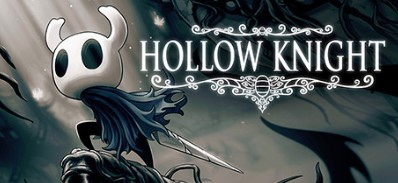
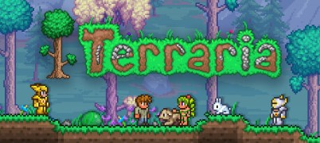

어드벤처

Hollow Knight-https://store.steampowered.com/app/367520/Hollow_Knight
97% 압긍-메트로배니아, 소울라이크, 플랫폼, 2D, 인디
₩ 16,500

Terraria-https://store.steampowered.com/app/105600/Terraria
97% 압긍-오픈 월드 생존 제작, 샌드박스, 생존, 2D, 건설
₩ 10,500

The Witcher® 3: Wild Hunt-https://store.steampowered.com/app/292030/The_Witcher_3_Wild_Hunt
96% 압긍-오픈 월드, RPG, 풍부한 스토리, 분위기 있는
₩ 34,800